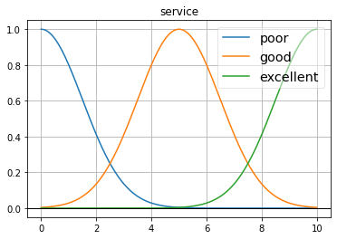
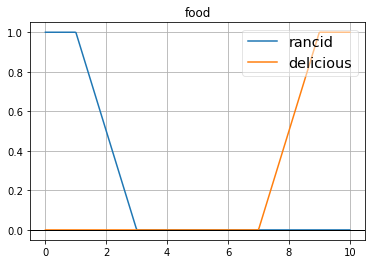
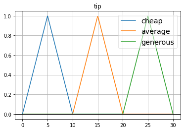
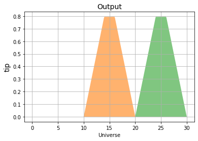
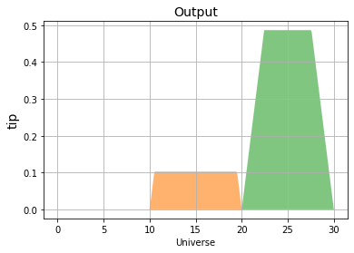
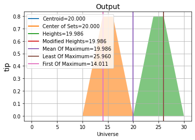
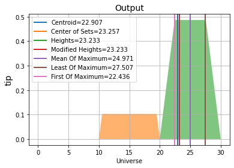
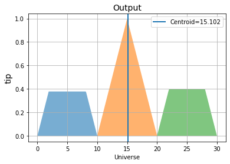
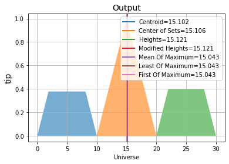

[1]:
import FuzzySystem as fs
import numpy as np
Basic Tipping Problem¶
[2]:
#INPUTS
print('*** Inputs ***')
service_poor = fs.FuzzySet('poor', fs.Gaussmf([1.5, 0]))
service_good = fs.FuzzySet('good', fs.Gaussmf([1.5, 5]))
service_excellent = fs.FuzzySet('excellent', fs.Gaussmf([1.5, 10]))
service = fs.FuzzyVariable('service',[service_poor, service_good, service_excellent], universe=[0, 10])
print('Service')
service.show()
food_rancid = fs.FuzzySet('rancid', fs.Trapmf([0,0,1,3]))
food_delicious = fs.FuzzySet('delicious', fs.Trapmf([7,9,10,10]))
food = fs.FuzzyVariable('food', [food_rancid, food_delicious], universe=[0, 10])
print('Food')
food.show()
#OUTPUT
print('*** Outputs ***')
tip_cheap = fs.FuzzySet('cheap', fs.Trimf([0,5,10]))
tip_avg = fs.FuzzySet('average', fs.Trimf([10,15,20]))
tip_generous = fs.FuzzySet('generous', fs.Trimf([20,25,30]))
tip = fs.FuzzyVariable('tip', [tip_cheap, tip_avg, tip_generous], universe=[0, 30])
print('Tip')
tip.show()
#RULES
ant1 = fs.Antecedent(service['poor'], conector='min')
ant1.add(food['rancid'])
cont1 = fs.Consequent([tip['cheap']])
rule1 = fs.FuzzyRule(ant1, cont1)
ant2 = fs.Antecedent(service['good'] | food['delicious'])
cont2 = fs.Consequent([tip['average']])
rule2 = fs.FuzzyRule(ant2, cont2)
rule3 = fs.FuzzyRule(fs.Antecedent(service['excellent'] | food['delicious']),
fs.Consequent([ tip['generous'] ]))
#Building the FIS
fis = fs.FuzzyInferenceSystem([rule1, rule2, rule3],
and_op='min',
or_op='max')
#FIS Evaluation
inputs = {'service':[8.183, 8.2], 'food':[8.59,4]}
result = fis.eval(inputs, verbose=True)
*** Inputs ***
Service

Food

*** Outputs ***
Tip

Inputs:
service: [8.183, 8.2]
food: [8.59, 4]
IF service is poor and food is rancid THEN tip is cheap, fs = [0. 0.] with weight = 1.00
IF service is good or food is delicious THEN tip is average, fs = [0.79 0.1 ] with weight = 1.00
IF service is excellent or food is delicious THEN tip is generous, fs = [0.79 0.49] with weight = 1.00
[3]:
print("Fuzzy output")
#instances
for i in range(len(inputs['service'])):
print("Instance: {}\n".format(i))
result.show(nout=i)
Fuzzy output
Instance: 0

Instance: 1

[4]:
print('Defuzzification using Centroid method:')
fs.Centroid(result).eval()
Defuzzification using Centroid method:
[4]:
[{'tip': array(20.)}, {'tip': array(22.91)}]
[5]:
print('Defuzzification using a list of methods:')
Defuzzification_methods = [fs.Centroid,
fs.CenterOfSets,
fs.Heights,
fs.ModifiedHeights,
fs.MeanOfMaximum,
fs.LastOfMaximum,
fs.FirstOfMaximum]
#instances
for i in range(2):
print("Instance: {}\n".format(i))
result.show(Defuzzification_methods, nout=i)
Defuzzification using a list of methods:
Instance: 0
Centroid=20.000
Center of Sets=20.000
Heights=19.986
Modified Heights=19.986
Mean Of Maximum=19.986
Least Of Maximum=25.960
First Of Maximum=14.011

Instance: 1
Centroid=22.907
Center of Sets=23.257
Heights=23.233
Modified Heights=23.233
Mean Of Maximum=24.971
Least Of Maximum=27.507
First Of Maximum=22.436

[6]:
# print('Activation of fuzzy sets for the given inputs')
# for i,rule in enumerate(result.fuzzysets):
# print('Rule: ', i+1)
# for y, fs_array in rule.items():
# print('Output: ', y)
# for fuzzyset in fs_array:
# fuzzyset.show()
Non-singleton Input¶
[7]:
fis.show_rules()
Fuzzy System Rules:
IF service is poor and food is rancid THEN tip is cheap
IF service is good or food is delicious THEN tip is average
IF service is excellent or food is delicious THEN tip is generous
[8]:
nsinp1_values = np.linspace(0,10,50)
nsinp1 = fs.NonSingleton(fs.Gaussmf([2,5]), nsinp1_values)
nsinp2_values = np.linspace(0,10,50)
nsinp2 = fs.NonSingleton(fs.Gaussmf([2,5]), nsinp2_values)
nsinputs = {'service':nsinp1, 'food':nsinp2}
resultns = fis.eval(nsinputs)
[9]:
print('Defuzzification using Centroid method:')
resultns.show(fs.Centroid)
Defuzzification using Centroid method:

[10]:
print('Defuzzification using a list of methods:')
resultns.show(Defuzzification_methods)
Defuzzification using a list of methods:
Centroid=15.102
Center of Sets=15.106
Heights=15.121
Modified Heights=15.121
Mean Of Maximum=15.043
Least Of Maximum=15.043
First Of Maximum=15.043

[10]: